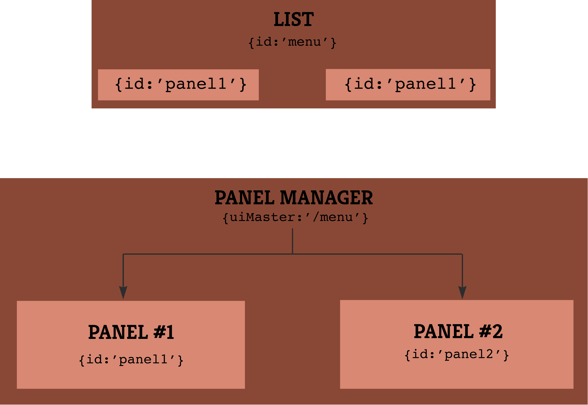

This is the basic component. In fact you app will be inserted in a Panel.
Initialize it with {content:'Whatever html you want'} or {innerTemplate:function (){...}}
A Panel is a container, that you'll mainly use to wrap around other UI elements.
Click for detailsThe Panel Manager component is used as a view switcher.
It listens to event from a parent UI element ({uiMaster:'/parent/path'}), and show one of its children at a time.
In the following pattern, we have a panel manager listening to a menu list.
When one item of the menu is selected, the panel shows the appropriate child panel, hiding every other.

return [
{
id:'menu',
type:'list',
data:[
{id:'panel1', label:'item #1'},
{id:'panel2', label:'item #2'}
]
},
{
id:'panelmgr',
type:'panel.manager',
uiMaster:'/menu',
children:[
{
id:'panel1',
type:'panel',
content:'Panel #1'
},
{
id:'panel2',
type:'panel',
content:'Panel #2'
}
]
}
];
Well, this is a list of items.
In a browser, it will be anything from a dead-simple UL/LI to whatever you want (tweaking itemTemplate & itemInnerTemplate).
On a smartphone, it will be native-looking scrollinglist, using iScroll, if you define your ui element with scroller:true. iScroll will add a <div> in your element to insert the scrollbar. You can style it using the scrollBarClass:'yourcssclass' option.
Switching to Joe Hewitt's scrollability is on the roadmap of the iOS adapter.
Basically, a classic <input type='button' />, with a native fallback on mobile devices
Your media player, html5, flash, ... the most suited on the platform you run your app
Your media controls: play, pause, stop, forward, …
Not implemented in ios adapter, as we're using the native video player, which comes with its own controls.
Actually the Map component is a abstraction of the Google Maps API.
It uses the Google Maps Javascript API V3, with a fallback on the Google Static Maps API if needed.
You're able to control the positioning of the map, the zoom level, ... and of course to pin point your data.
If you want to use another maps provider (Bing Maps, OpenStreet Maps, ..), feel free to contribute ! Fork us on github